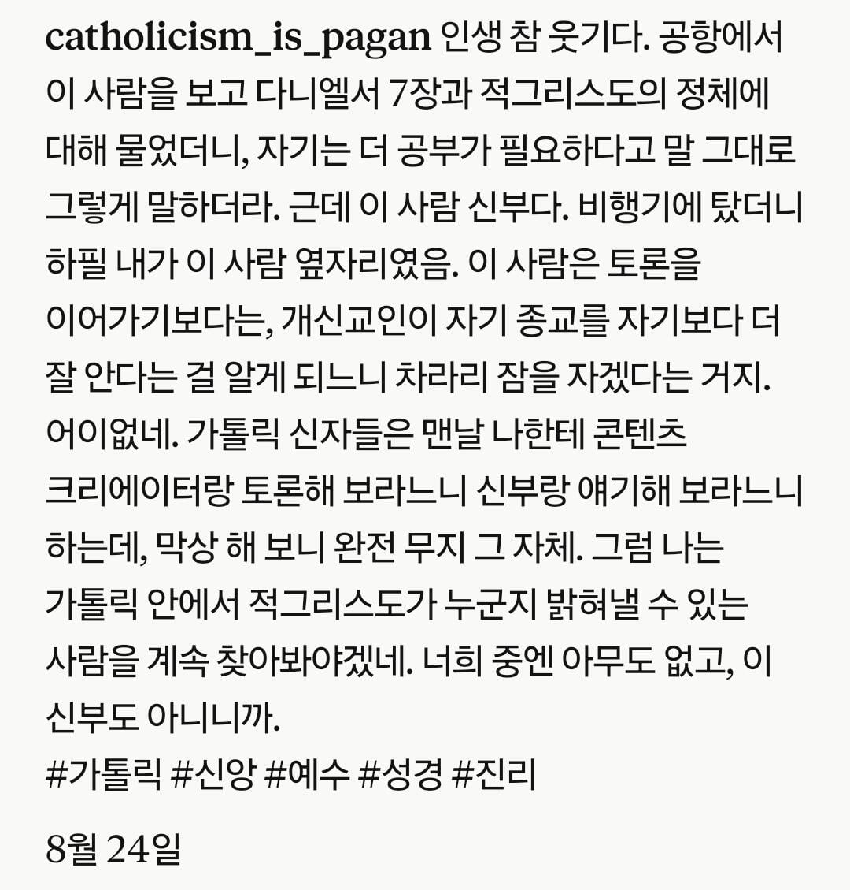

"그렇군요... 근데 전 공부가 부족해서..." (zZZ...)

"그렇군요... 근데 전 공부가 부족해서..." (zZZ...)
ㅋㅋ병먹금은 진리다
저게 뭔말인거?
불교라 잘몰라..
어그로끌길래차단함
불교 욕하지마라
난 불굔데도 이해 잘 한다
불교라 잘 모르는게 왜 불교 욕임?
불교육이 아닐까요?
적그리스도는 불교의 마라천 비슷한거임
다만 적그리스도는 미래에 나타날거라고 예언된 분탕종자라서 정상적인 종교관련대화에서는 뭔가 토론할거리가 없음... 욕심많은 종교지도자. 정신병자. 악마의 대리자 뭐가될지 알수없으니까
개독은 서양에서도 저지랄이구나 ㅋㅋㅋㅋㅋㅋㅋ
원래 미국 개신교가 한국 기독교 원조
진짜 병신…
Pagan은 시발 ㅋㅋ
로마카톨릭 관점에서 시골사람이라는 단어를 이단의 의미로 쓴건데
그 화자한테 pagan 소리 하는건 보법이 다르다 ㄹㅇㅋㅋ
울티마
병먹금 ㅋㅋㅋㅋㅋㅋㅋㅋㅋㅋㅋㅋ
한 가지 확실한건 예수님은 성경 달달 외우면서 지 좆대로 해석한 강한 믿음으로 타인을 업신여기는 사람 보단
성경 구절 하나도 외울 줄 모르지만 이웃에게 선행 하나라도, 사랑 하나라도 더 베푼 사람을 좋아하심.
여기도 개신교든 카톨릭이든 무슨 교회 권사니 장로니 그딴 타이틀에 목숨걸지 말고
주변에 어려운 사람 있으면 많이 돕고 기부라도 열심히 해라
최소한 개신교인들은 성경구절 모르고 예수 안믿으면 '무적권' 지옥이 교리의 뼈대같던데...
나야 천국안보내줘도 내 만족감을 위해 선행하려 노력하는 편이지만 개신교인들은 천국행 티켓 없이도 선행을 하려들까?
그래서 이적 없는 믿음을 최고로 침
ㄴㄴ 예수님은 본인이 없다는 증거 10348조 개 깔아두고도 그래도 믿는사람을 좋아함
선행이랑은 연관없음 물론 그 없다는 증거도 예수 본인이 만듬 개싸패임
신부가 내공이 있네
불쌍하네
한두마디만 나눠보면 이새끼가 순수하게 궁금한건지 답정너인지 판별이 되거든
답정너에게 시간낭비할 이유가 없음
먹-금 ㅋㅋㅋ
행복의 비결은 무엇입니까?
바보들과 논쟁하지 않는 것입니다
제 생각은 다릅니다
당신 말이 맞습니다
병먹금ㅋㅋㅋ
참 병신같은게 사랑의 종교에서 이웃을 사랑하진 않으면서 적그리스도 같은 악은 존나게 찾아댐
병먹금 ㅋㅋㅋㅋㅋㅋㅋㅋㅋㅋㅋㅋㅋ
왜 제단차려서 양 불태우기도 하지 아주
현실차단 ㅋㅋㅋㅋ
복음주의 신자들 개또라이니까 그렇지
병먹금 ㅋㅋㅋㅋㅋㅋㅋㅋㅋㅋㅋㅋㅋㅋ
병신과 대화하지 않아야 합니다.
신사답게 처리했네
하긴 저 사람들은 몇백년 전부터 병신들이 꼬였으니 대처법이 있겠지
아
병신과 말싸움해서 좆바르는 것입니다
그걸 왜 비행기 타서 쳐하냐 ㅋㅋㅋ